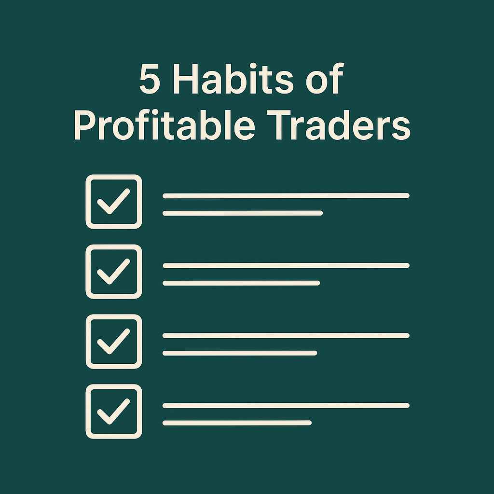

5 Habits of Profitable Traders
Ever wondered why some traders consistently win while others struggle or blow accounts week after week? It’s not just the strategy — it’s the habits they carry into every trade. Let’s break down the real mindset and behavior of consistently profitable traders.
1. They Treat Trading Like a Business
Trading isn’t a game, and it’s not gambling. Profitable traders build a system, manage risk, track performance, and review results regularly. Just like any successful business, they aim for consistency over excitement. They don’t chase signals — they execute a plan. Every trade is backed by logic and analysis, not emotion.
In Africa, where most youth are just looking for “quick wins,” this mindset is rare. But if you adopt it, you’ll stand out. Treat every dollar you risk like business capital — because it is.
2. Risk Management is Their Religion
Profitable traders don't focus on how much they can make — they focus on how little they can lose. Most people blow accounts because they risk too much on one trade. Winners use stop losses religiously, never over-leverage, and always calculate lot sizes before entering the market.
For traders in Zambia, Nigeria, Ghana, and beyond — where internet is expensive and funding accounts is tough — capital protection is everything. A $50 account can grow if you manage risk properly. But once it’s gone, you’re back to square one.
3. Patience and Discipline Rule
The market doesn’t care about your feelings. Profitable traders are patient enough to wait for perfect setups and disciplined enough to sit on their hands when the setup isn’t there. They don’t jump in just because they’re bored or saw someone post profits on Telegram.
They know trading is about high-quality entries, not high-frequency gambling. They wait, watch, and act only when their edge appears — just like a sniper.
4. They Journal Every Move
Real traders write things down. They track every win and loss, including the emotional state during the trade. They go back weekly or monthly and learn from patterns. This is how they improve — through data and review.
Whether it’s in a notebook, Excel sheet, or a free journaling app, tracking your trades gives you the roadmap to mastery. It turns every loss into a lesson and every win into a blueprint.
5. They Never Stop Learning
The forex market is always evolving. Economic news changes, brokers update conditions, and AI tools are becoming more common. Profitable traders never assume they’ve arrived. They study, watch webinars, test new strategies, and most importantly — learn from their own trades.
Even if you’ve made consistent profits for months, the moment you stop learning is the moment the market humbles you. Every day is a new chance to sharpen your edge.
Final Thoughts
These habits are simple, but not easy. Most traders know them — few follow them. If you want to shift from random luck to consistent success, these five are the foundation.
You don’t need the fanciest indicators or the fastest phone. What you need is consistency, humility, and focus. Profitable trading isn’t about magic — it’s about mindset, math, and mastery.
-Mr Right —Eugene(GrindHub creator)
← Back to Blogs